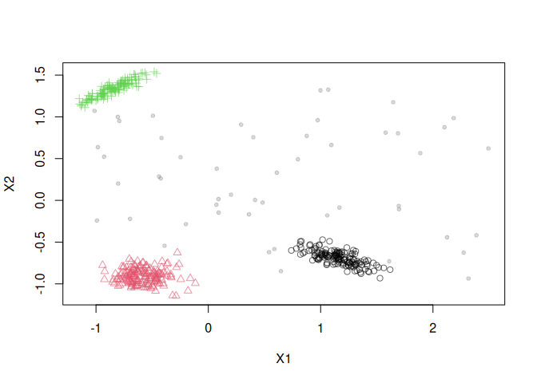
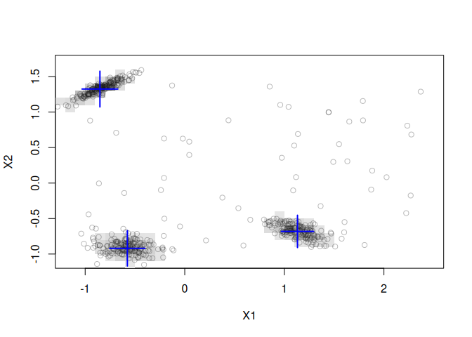
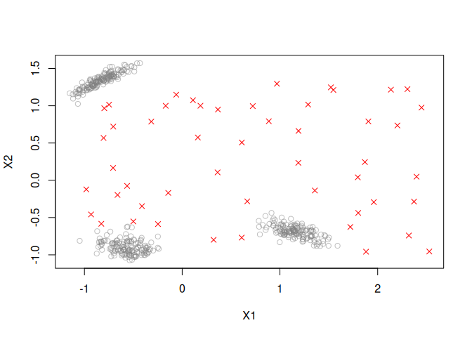

Maintainer: Michael Hahsler
Introduction
The package provides support for modeling and simulating data streams as well as an extensible framework for implementing, interfacing and experimenting with algorithms for various data stream mining tasks. The main advantage of stream is that it seamlessly integrates with the large existing infrastructure provided by R. The package provides:
- Stream Sources: streaming from files, databases, in-memory data, URLs, pipes, socket connections and several data stream generators including dynamically streams with concept drift.
- Stream Processing with filters (convolution, scaling, exponential moving average, …)
- Stream Aggregation: sampling, windowing.
- Stream Clustering: BICO, BIRCH, D-Stream, DBSTREAM, and evoStream.
- Stream Outlier Detection based on D-Stream, DBSTREAM.
- Stream Classification with DecisionStumps, HoeffdingTree, NaiveBayes and Ensembles (streamMOA via RMOA).
- Stream Regression with Perceptron, FIMTDD, ORTO, … (streamMOA via RMOA).
- Stream Mining Evaluation with prequential error estimation.
Additional packages in the stream family are:
- streamConnect: Connect stream mining components using sockets and web services.
- streamMOA: Interface to clustering algorithms implemented in the MOA framework. The package interfaces clustering algorithms like of DenStream, ClusTree, CluStream and MCOD. The package also provides an interface to RMOA for MOA’s stream classifiers and stream regression models.
- rEMM: Provides implementations of threshold nearest neighbor clustering (tNN) and Extensible Markov Model (EMM) for modelling temporal relationships between clusters.
To cite package ‘stream’ in publications use:
Hahsler M, Bolaños M, Forrest J (2017). “Introduction to stream: An Extensible Framework for Data Stream Clustering Research with R.” Journal of Statistical Software, 76(14), 1-50. doi:10.18637/jss.v076.i14 https://doi.org/10.18637/jss.v076.i14.
@Article{,
title = {Introduction to {stream}: An Extensible Framework for Data Stream Clustering Research with {R}},
author = {Michael Hahsler and Matthew Bola{\~n}os and John Forrest},
journal = {Journal of Statistical Software},
year = {2017},
volume = {76},
number = {14},
pages = {1--50},
doi = {10.18637/jss.v076.i14},
}Installation
Stable CRAN version: Install from within R with
install.packages("stream")Current development version: Install from r-universe.
install.packages("stream",
repos = c("https://mhahsler.r-universe.dev",
"https://cloud.r-project.org/"))Usage
Load the package and a random data stream with 3 Gaussian clusters and 10% noise and scale the data to z-scores.
library("stream")
set.seed(2000)
stream <- DSD_Gaussians(k = 3, d = 2, noise = 0.1) %>%
DSF_Scale()
get_points(stream, n = 5)## X1 X2 .class
## 1 -0.267 -0.802 2
## 2 0.531 1.078 NA
## 3 -0.706 1.427 3
## 4 -0.781 1.355 3
## 5 1.170 -0.712 1
plot(stream)
Cluster a stream of 1000 points using D-Stream which estimates point density in grid cells.
dsc <- DSC_DStream(gridsize = 0.1)
update(dsc, stream, 1000)
plot(dsc, stream, grid = TRUE)
evaluate_static(dsc, stream, n = 100)## Evaluation results for micro-clusters.
## Points were assigned to micro-clusters.
##
## numPoints numMicroClusters numMacroClusters
## 100.0000 65.0000 3.0000
## noisePredicted SSQ silhouette
## 23.0000 0.1696 0.0786
## average.between average.within max.diameter
## 1.7809 0.5816 3.9368
## min.separation ave.within.cluster.ss g2
## 0.0146 0.5217 0.1596
## pearsongamma dunn dunn2
## 0.0637 0.0037 0.0154
## entropy wb.ratio numClasses
## 3.1721 0.3266 4.0000
## noiseActual noisePrecision outlierJaccard
## 16.0000 0.6957 0.6957
## precision recall F1
## 0.6170 0.1618 0.2563
## purity Euclidean Manhattan
## 0.9920 0.1633 0.3000
## Rand cRand NMI
## 0.7620 0.1688 0.5551
## KP angle diag
## 0.2651 0.3000 0.3000
## FM Jaccard PS
## 0.3159 0.1470 0.0541
## vi
## 2.2264
## attr(,"type")
## [1] "micro"
## attr(,"assign")
## [1] "micro"Outlier detection using DBSTREAM which uses micro-clusters with a given radius.
dso <- DSOutlier_DBSTREAM(r = 0.1)
update(dso, stream, 1000)
plot(dso, stream)
evaluate_static(dso, stream, n = 100, measure = c("numPoints", "noiseActual", "noisePredicted",
"noisePrecision"))## Evaluation results for micro-clusters.
## Points were assigned to micro-clusters.
##
## numPoints noiseActual noisePredicted noisePrecision
## 100 7 7 1
## attr(,"type")
## [1] "micro"
## attr(,"assign")
## [1] "micro"Preparing complete stream process pipelines that can be run using a single update() call.
pipeline <- DSD_Gaussians(k = 3, d = 2, noise = 0.1) %>%
DSF_Scale() %>%
DST_Runner(DSC_DStream(gridsize = 0.1))
pipeline## DST pipline runner
## DSD: Gaussian Mixture (d = 2, k = 3)
## + scaled
## DST: D-Stream
## Class: DST_Runner, DST
update(pipeline, n = 500)
pipeline$dstAcknowledgments
The development of the stream package was supported in part by NSF IIS-0948893, NSF CMMI 1728612, and NIH R21HG005912.
References
- Michael Hahsler, Matthew Bolaños, and John Forrest. stream: An extensible framework for data stream clustering research with R. Journal of Statistical Software, 76(14), February 2017.
- stream package vignette with complete examples.
- stream reference manual